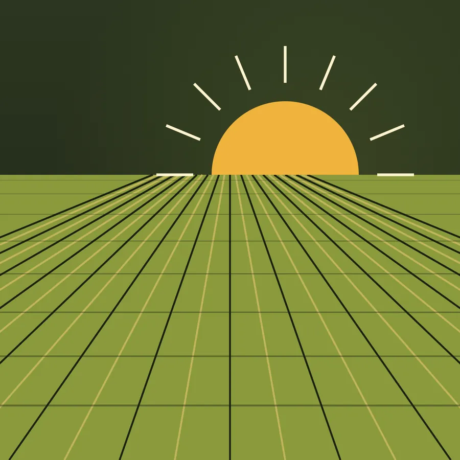
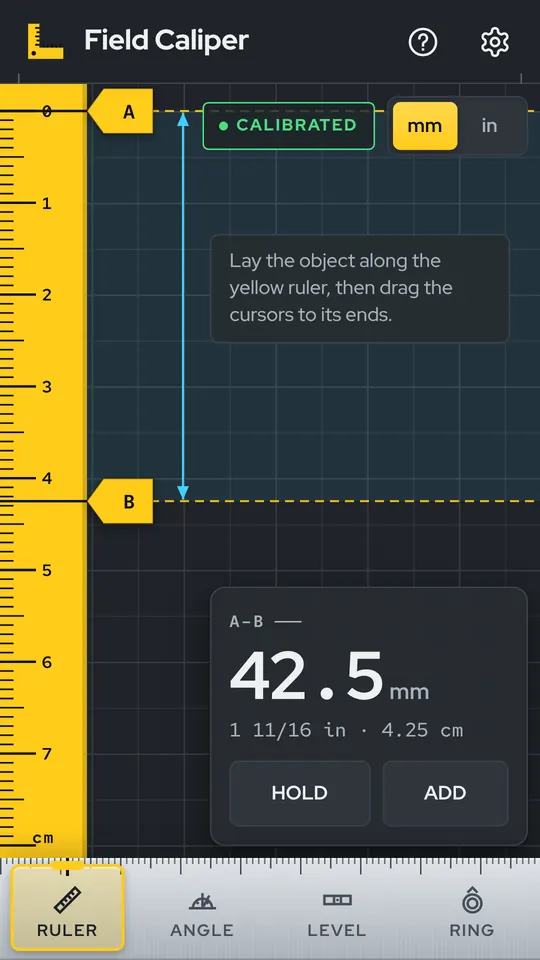
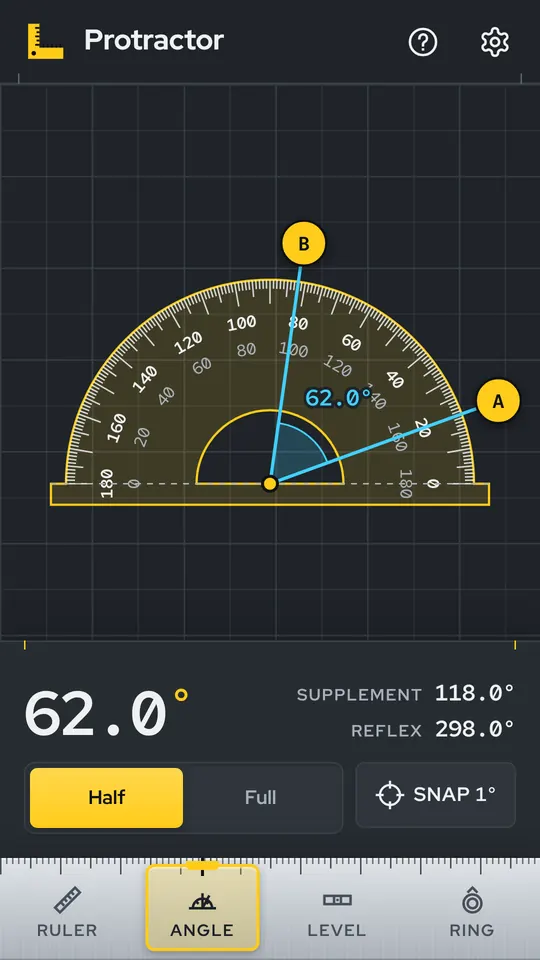
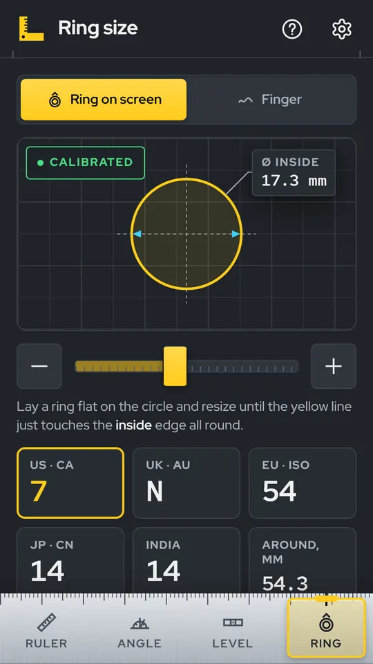
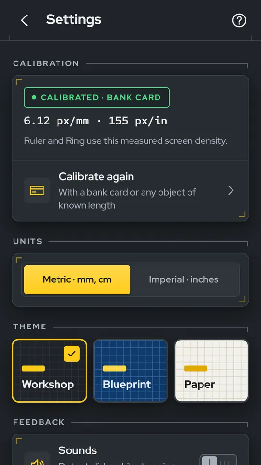
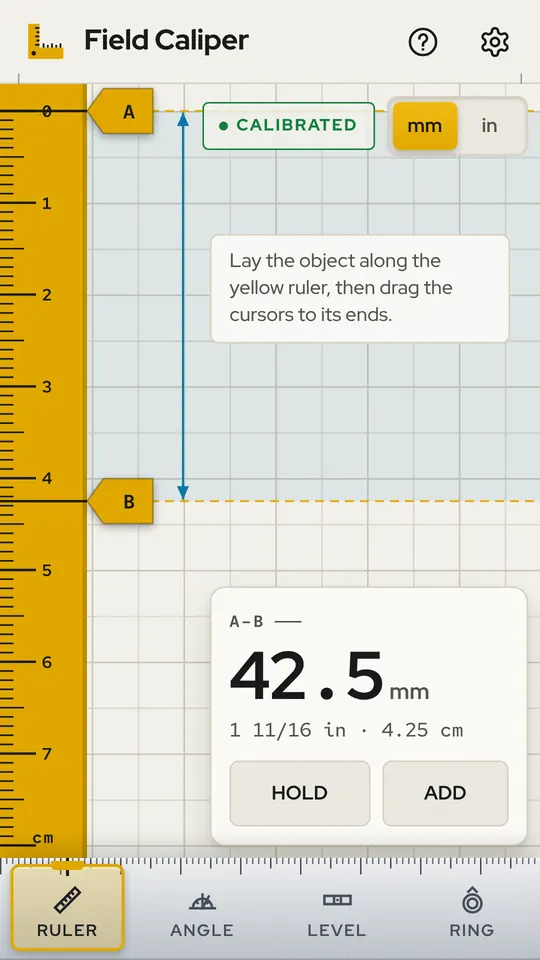
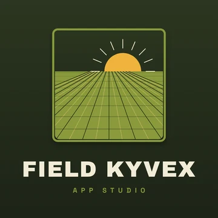
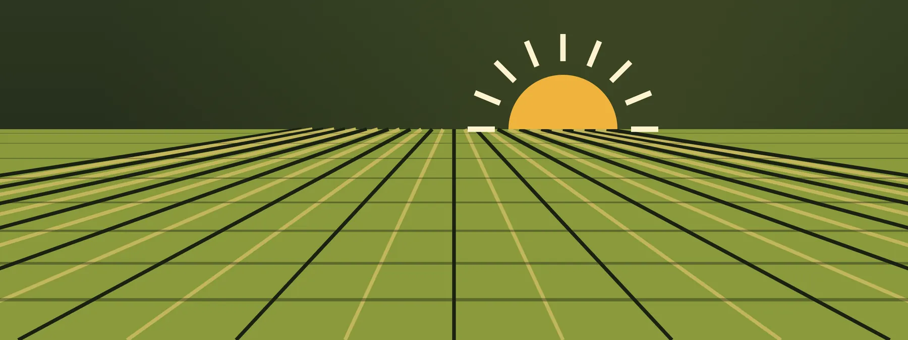
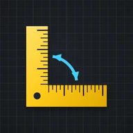

Ruler
A yellow ruler runs down the left edge in mm/cm or inches to 1/16. Drag cursors A and B and the span reads out live, for example "42.5 mm · 1 11/16 in · 4.25 cm". Hold a reading, add spans together, and feel a click at every whole centimetre.
FIELD KYVEX · Tools app for Android
Your phone as a ruler, protractor and spirit level.
Ruler, protractor, spirit level and ring sizer you can calibrate. Offline.



01Features
Your phone as a ruler, a protractor and a spirit level, plus a ring sizer, drawn like a drafting table.
A yellow ruler runs down the left edge in mm/cm or inches to 1/16. Drag cursors A and B and the span reads out live, for example "42.5 mm · 1 11/16 in · 4.25 cm". Hold a reading, add spans together, and feel a click at every whole centimetre.
A half or full-circle protractor with two draggable arms. The angle shows to 0.1°, with its supplement and reflex angle. Snap to whole degrees when you need to.
A spirit level from the phone's tilt sensor: a bullseye when the phone lies flat and a tube when it stands on an edge. The bubble turns green within ±0.5° and chimes at 0.0°.
Lay a ring on the circle and size it, or type the length of string that went round a finger. You get US/CA, UK/AU, EU/ISO, JP/CN and Indian sizes.
Calibrate once with any bank or ID card, or any object of known length, and every reading matches your screen.
Please noteReadings are as accurate as your calibration. For anything critical, check with a physical tool.
02Screens
Real screens from Field Caliper, with real data.




03Made by
Measure true, wherever you are.
FIELD KYVEX is an independent app studio. Questions about Field Caliper? Write to dev.fieldkyvex@gmail.com.
04Trust


Your phone as a ruler, protractor and spirit level. Free, offline and ad-free.